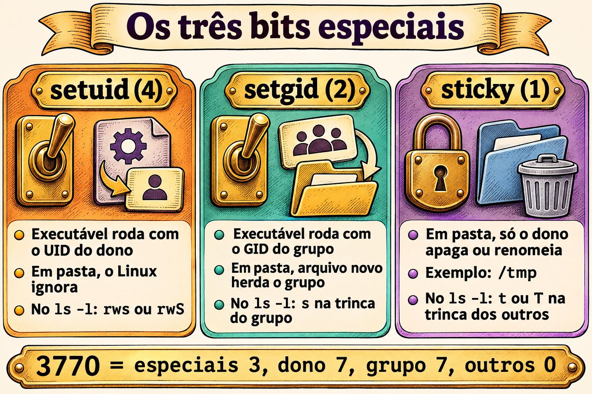
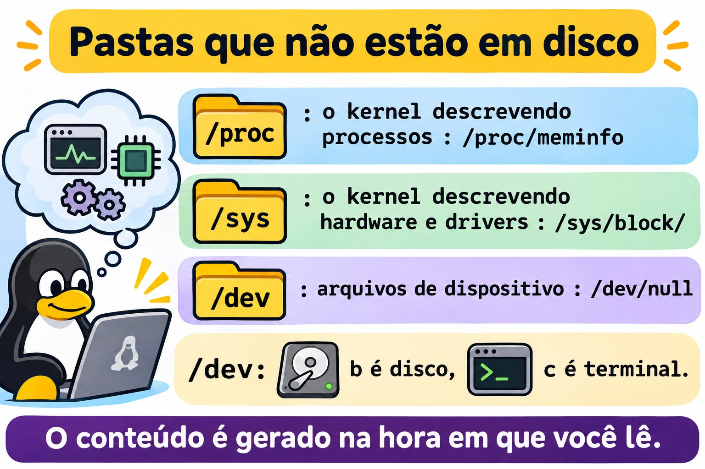
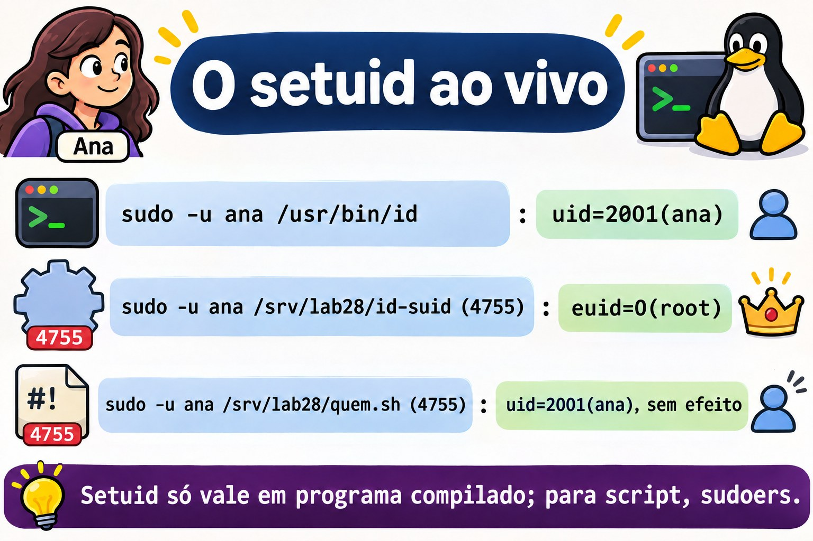
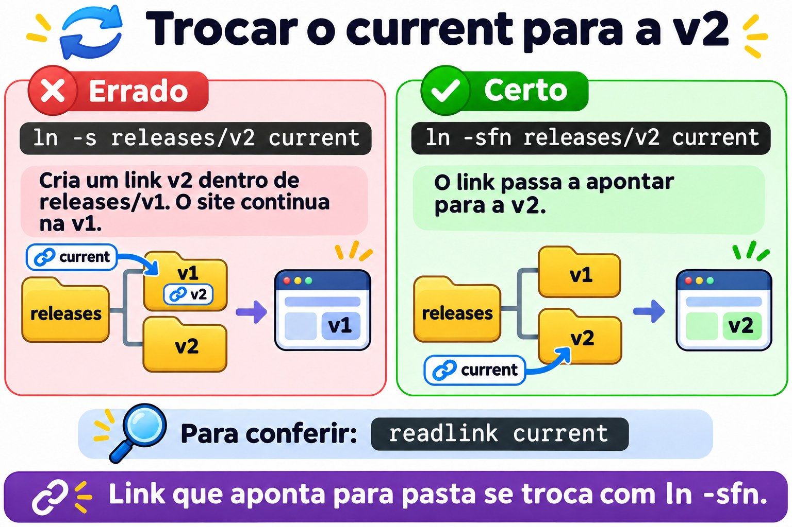
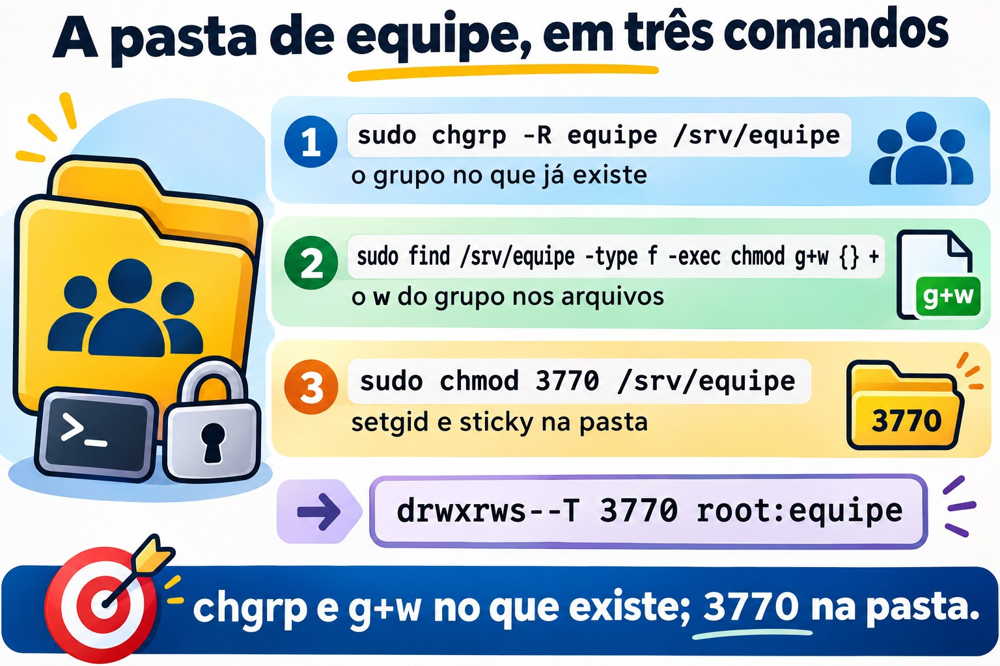

Aula 2.8 · Diretórios e arquivos especiais
Oitava e última aula do Módulo 2. Na Aula 2.7, a pasta da equipe ficou quase pronta: a Ana e o Bruno entram, leem e escrevem, mas cada arquivo novo nasce com o grupo errado, e qualquer um dos dois pode apagar o trabalho do outro. Hoje você fecha isso com três bits que ficam escondidos no ls -l: o setgid, que faz a pasta dar o grupo aos arquivos novos, o sticky, que impede que um apague o arquivo do outro, e o setuid, que explica por que a Ana consegue trocar a própria senha num arquivo que só o root pode alterar. Depois você aprende os dois tipos de link, que estão por baixo de todo deploy com "rollback em um segundo", e passeia por /proc, /sys e /dev, as pastas que parecem arquivos e são o kernel falando. No fim, o desafio do módulo: a pasta /srv/equipe funcionando de verdade, nas duas VMs.
| Ficha | Aula 2.8 |
|---|---|
| Módulo | M2 · Sistema, usuários e permissões, aula 8 de 8 |
| Quando | Semana 5 |
| Ao final você consegue | Explicar e usar o sticky bit, o setuid e o setgid, em arquivos e em pastas; ler s, S, t e T num ls -l; montar uma pasta de colaboração em que todo arquivo novo é do grupo e ninguém apaga o arquivo do outro; achar os programas com setuid de um servidor; criar links físicos e simbólicos e prever o que acontece quando o original some; trocar um link de deploy sem janela; ler informações do sistema em /proc, /sys e /dev |
| Pré-requisitos | Aula 2.7 (trincas, octal, chmod, chgrp, umask, namei -l; a pasta /srv/equipe em 770 root:equipe nas duas VMs e o notas-bruno.txt com o grupo errado na rocky-lab); Aula 2.6 (Ana, Bruno e o grupo equipe); Aula 2.5 (sudo e as regras do sudoers) |
| Tempo | Cerca de 2h30 |
| Snapshots | m2a8-inicio e m2a8-fim nas duas VMs |
1 · Aquecimento
Três perguntas, de cabeça. Escreva as respostas; o Gabarito confere no fim.
- O
/tmpédrwxrwxrwt root root, e a Ana deixou lá o arquivoana.txtem-rw-rw-rw-. Palpite: o Bruno consegue apagá-lo? - O
ls -l /usr/bin/passwdmostra-rwsr-xr-x root root, e o/etc/shadowsó pode ser alterado pelo root. Mesmo assim, a Ana rodapasswde a senha dela muda no/etc/shadow. Palpite: como? - Você tem um arquivo
relatorio.txte cria um link para ele. Depois apaga orelatorio.txt. Palpite: o conteúdo continua acessível pelo link?
2 · Por que importa
Os três bits e os links aparecem em chamados que parecem não ter nada a ver com permissão:
| O chamado | A resposta errada | O que ela causa |
|---|---|---|
| "Toda vez que o Bruno cria um arquivo na pasta da equipe, a Ana não consegue editar" | Um cron que roda chmod -R 777 a cada minuto | Um minuto de janela, a pasta aberta para a máquina inteira e o problema de volta no arquivo seguinte |
| "Alguém apagou a planilha do financeiro na pasta compartilhada" | Tirar o w de todo mundo na pasta | Ninguém consegue mais criar nada; a equipe passa a mandar arquivo por e-mail |
| "O script de backup precisa rodar como root, mas quem roda é o operador" | chmod u+s backup.sh | Não funciona (o Linux ignora o setuid em scripts), e quem tentar de novo com uma cópia do bash cria uma porta dos fundos |
| "O site voltou para a versão antiga sozinho" ou "o site saiu do ar durante o deploy" | Apagar e recriar o link current à mão | Um instante sem link, ou um link criado dentro da pasta errada |
"O disco encheu, mas o du não acha o arquivo" | Reiniciar o servidor | O arquivo apagado ainda estava aberto por um processo; o /proc mostrava qual |
Quem resolve de verdade sabe ler um s ou um t no lugar do x, sabe o que é um inode e sabe que /proc é o kernel respondendo perguntas. É isso que você treina hoje.
3 · Modelo mental
O modo de um arquivo tem quatro dígitos em octal, não três. O primeiro, que quase sempre é
0e por isso some, guarda três bits especiais: setuid (4), setgid (2) e sticky (1). Eles não têm coluna própria nols -l: cada um aparece no lugar doxde uma trinca.
especiais dono grupo outros
octal: 3 7 7 0 chmod 3770
bits: 0 1 1 rwx rwx ---
│ │ └─ sticky (1) ──────────────┐
│ └─── setgid (2) ───────┐ │
└───── setuid (4) ─┐ │ │
▼ ▼ ▼
ls -l: d rwx rws --T /srv/equipe
│ │
s minúsculo = bit + x ──┘ └── T maiúsculo = bit sem x
S maiúsculo = bit sem x t minúsculo = bit + x
O que cada um faz:
num arquivo executável numa pasta
setuid (4) roda com o UID do DONO (ignorado no Linux)
setgid (2) roda com o GID do GRUPO arquivo novo herda o GRUPO da pasta
sticky (1) (ignorado no Linux) só o dono do arquivo apaga ou renomeiaO segundo modelo é para os links. Um nome de arquivo não é o arquivo: é uma entrada na pasta que aponta para um inode, e o inode aponta para os dados.
pasta /srv/lab28/links
┌──────────────────────┬────────┐
│ nome │ inode │
├──────────────────────┼────────┤ ┌──────────────┐ ┌───────────────┐
│ config.conf │ 131077 │──┬───▶ │ inode 131077 │───▶ │ dados: │
│ config-fisico.conf │ 131077 │──┘ │ dono, modo, │ │ porta=8080 │
│ config-simbolico ────┼────────┼──┐ │ links: 2 │ └───────────────┘
└──────────────────────┴────────┘ │ └──────────────┘
│
└──▶ um inode próprio, cujo conteúdo é só o
TEXTO "config.conf": um caminho, procurado
de novo a cada usoO link físico é um segundo nome para o mesmo inode: apagar um dos nomes não apaga os dados, porque o kernel só libera o inode quando o contador de links chega a zero e nenhum processo o mantém aberto. O link simbólico é um bilhete com um endereço: se o endereço deixa de existir, o bilhete continua lá, apontando para o nada.


4 · Conceito em camadas
Essencial
O sticky bit, em pastas. Numa pasta com w para várias pessoas, qualquer uma pode apagar ou renomear qualquer arquivo, porque apagar é escrever na pasta (Aula 2.7). Com o sticky bit, só três contas apagam ou renomeiam um arquivo: o dono do arquivo, o dono da pasta e o root. É o que protege o /tmp, onde todo mundo escreve:
stat -c '%A %a %U:%G %n' /tmp /var/tmpdrwxrwxrwt 1777 root:root /tmp
drwxrwxrwt 1777 root:root /var/tmpO sticky não muda quem lê ou escreve no conteúdo do arquivo: isso continua com as trincas do arquivo. Ele só muda quem apaga e quem renomeia.
O setuid, em executáveis. Normalmente, um programa roda com o UID de quem o chamou. Com o setuid, ele roda com o UID do dono do arquivo. O passwd é do root e tem setuid: quando a Ana o roda, o processo tem o UID efetivo do root e consegue gravar no /etc/shadow. O próprio passwd garante que ela só troque a senha dela. É por isso que um programa com setuid de root é um ponto sensível: qualquer falha nele vira acesso de root.
ls -l /usr/bin/passwd /usr/bin/sudo /usr/bin/suOs três mostram -rwsr-xr-x e o dono root. O s no lugar do x do dono é o setuid.
O setgid, em pastas. Na Aula 2.7, cada arquivo novo na /srv/equipe nascia com o grupo pessoal de quem criou. Com o setgid na pasta, todo arquivo novo nasce com o grupo da pasta, e toda subpasta nova nasce com o grupo e com o próprio setgid. É o bit que transforma uma pasta comum numa pasta de equipe.
O setgid, em executáveis. O programa roda com o GID do grupo do arquivo. No Debian, o crontab é -rwxr-sr-x root crontab: ele roda com o grupo crontab e, por isso, consegue gravar na pasta onde ficam as tabelas de cron de cada pessoa, que só esse grupo alcança.
Como ligar e desligar. No modo simbólico, u+s é setuid, g+s é setgid, o+t (ou +t) é sticky; com - no lugar do +, desliga. No octal, o quarto dígito vem na frente:
| Comando | Resultado numa pasta rwxrwx--- |
|---|---|
chmod g+s pasta | drwxrws--- (2770) |
chmod +t pasta | drwxrwx--T (1770) |
chmod 3770 pasta | drwxrws--T: setgid e sticky |
chmod g-s,-t pasta | drwxrwx--- (770) |
Letra minúscula ou maiúscula. O s e o t minúsculos dizem "o bit especial está ligado e o x dessa trinca também". O S e o T maiúsculos dizem "o bit está ligado e o x não". Num executável, S quase sempre é erro: um setuid sem x para o dono não serve para nada. Numa pasta de equipe como a drwxrws--T, o T é normal e o sticky funciona: os outros não têm x, mas o sticky protege quem está dentro, que é o grupo.
Os dois links.
ln config.conf config-fisico.conf # link físico: outro nome para o mesmo inode
ln -s config.conf config-simbolico # link simbólico: um arquivo que guarda um caminho
ls -liO ls -li mostra o número do inode na primeira coluna e o contador de links depois do modo. O físico tem o mesmo inode do original e o contador sobe para 2. O simbólico tem inode próprio, começa com l e mostra a seta: config-simbolico -> config.conf.
| Link físico | Link simbólico | |
|---|---|---|
| O que é | Outro nome para o mesmo inode | Um arquivo que guarda um caminho |
| Apagaram o original | Os dados continuam, pelo outro nome | O link fica quebrado: No such file or directory |
| Para pastas | Não pode | Pode |
| Entre sistemas de arquivos (outro disco, outra partição) | Não pode | Pode |
| Permissões | As do inode, que são as mesmas do original | O link é sempre lrwxrwxrwx; o que vale é o modo do destino |
| Uso típico | Backups incrementais que não duplicam arquivos iguais | current -> releases/v2, /etc/localtime, /bin -> usr/bin |
Intermediário
O setgid não conserta o passado. Ligar o g+s numa pasta afeta só o que for criado depois. Arquivos e subpastas que já existiam continuam com o grupo e o modo que tinham. Ao converter uma pasta antiga em pasta de equipe, são quatro passos, sempre os mesmos:
sudo chgrp -R equipe /srv/equipe # o grupo em tudo
sudo chmod -R g+rwX /srv/equipe # o grupo lê e escreve; pastas atravessáveis
sudo find /srv/equipe -type d -exec chmod g+s {} + # setgid em cada pasta, não só na de cima
sudo chmod +t /srv/equipe # sticky, se ninguém pode apagar o do outroO setgid dá o grupo, e o umask dá o w. O arquivo novo herda o grupo da pasta, mas o modo continua vindo do umask de quem criou. Com umask 022, o arquivo nasce rw-r--r--, do grupo equipe, e o resto do grupo só lê. A pasta de equipe só funciona por inteiro quando os membros têm umask 002 (o comum para usuários com grupo pessoal, que você mediu na Aula 2.7) ou quando a pasta tem uma ACL padrão (Aula 8.5). Lembre também que o sudo junta o umask de quem chamou com 0022: um arquivo criado com sudo -u ana nasce sem w para o grupo, a não ser que o comando defina o umask. É por isso que, no lab, os testes trazem umask 002 explícito.
O chmod numérico e os bits especiais em pastas. No chmod do GNU, que é o das duas VMs, um modo numérico de três dígitos não desliga o setuid nem o setgid de uma pasta: chmod 770 numa pasta 2770 deixa 2770. O sticky, ao contrário, é desligado. Para desligar o setgid de uma pasta, use o simbólico (chmod g-s) ou um zero a mais na frente (chmod 00770). Em arquivos, o modo numérico vale exatamente como foi escrito. Na dúvida, confira com stat depois.
O setuid é ignorado em scripts. O kernel só respeita o setuid e o setgid em programas compilados. Num script (#!/bin/bash), o bit pode até estar ligado e aparecer rws, mas o interpretador roda com o UID de quem chamou. Para deixar uma pessoa rodar um script como root, o caminho é uma regra no sudoers para aquele script (Aula 2.5).
Caminho relativo ou absoluto no link simbólico. O link guarda o texto exato que você escreveu. Um link relativo (ln -s releases/v2 current) é resolvido a partir da pasta onde o link está, e continua funcionando se a árvore inteira mudar de lugar. Um link absoluto (ln -s /srv/app/releases/v2 current) funciona de qualquer lugar, mas quebra se /srv/app mudar de nome. O erro clássico é criar o link relativo pensando na pasta em que você está, e não na pasta do link:
cd /srv
ln -s app/releases/v2 app/current # o link procura /srv/app/app/releases/v2: quebrado
ln -s releases/v2 app/current # o link procura /srv/app/releases/v2: certoTrocar um link que aponta para pasta. Se current é um link para uma pasta, ln -s releases/v1 current não troca o link: como current "é" uma pasta, o ln cria um link novo dentro dela, em releases/v2/v1. Para trocar o link em si, use ln -sfn: o -f substitui, e o -n diz para tratar current como o link, sem entrar nele.
/proc, /sys e /dev. As três pastas são sistemas de arquivos que não estão em disco:
| Pasta | Tipo (findmnt) | O que é | Exemplos |
|---|---|---|---|
/proc | proc | O kernel descrevendo processos e o sistema | /proc/cpuinfo, /proc/meminfo, /proc/<PID>/, /proc/sys/ (os parâmetros do sysctl) |
/sys | sysfs | O kernel descrevendo hardware e drivers | /sys/class/net/<placa>/address, /sys/block/ |
/dev | devtmpfs | Arquivos de dispositivo: ler e escrever neles é falar com o hardware ou com o kernel | /dev/sda, /dev/null, /dev/zero, /dev/urandom |
Um ls -l /proc/meminfo mostra tamanho 0, e um cat mostra dezenas de linhas: o conteúdo é gerado na hora em que você lê. Em /dev, a primeira letra do modo diz o tipo: b é dispositivo de bloco (discos), c é de caractere (terminais, /dev/null). Onde um arquivo comum mostraria o tamanho, o ls -l mostra dois números, o major e o minor, que dizem ao kernel qual driver e qual dispositivo.
/tmp e /var/tmp. Os dois têm sticky e 1777. O /var/tmp existe para o que precisa sobreviver a um reboot; o /tmp pode ser um tmpfs, na memória, e é limpo no boot ou por idade. Quem limpa é o systemd-tmpfiles, com as regras de /usr/lib/tmpfiles.d/tmp.conf. Nunca guarde em /tmp o que você não aceita perder.


Ponte Windows
| No Windows | No Linux | Diferença que importa |
|---|---|---|
| Permissão NTFS "Excluir" separada de "Gravar" | O sticky bit na pasta | No Windows você nega "Excluir" por pessoa; no Linux, o sticky vale para todos de uma vez: cada um só apaga o que é seu |
| Herança de permissões de pasta para arquivos novos | O setgid na pasta (só o grupo) e a ACL padrão (Aula 8.5) | O NTFS herda a ACL inteira; o setgid herda só o grupo, e o modo vem do umask |
| "Executar como administrador" e o UAC | sudo, e o setuid em poucos programas do sistema | O setuid é do arquivo, não da pessoa: vale para todo mundo que rodar aquele programa |
Atalho .lnk | Nada: o .lnk é um arquivo que só o Explorer entende | Um link simbólico funciona para qualquer programa, inclusive no terminal |
mklink /D e junções | ln -s | Mesma ideia; no Linux qualquer usuário cria, sem privilégio especial |
mklink /H | ln (link físico) | Mesma ideia: dois nomes, um arquivo |
| Gerenciador de Tarefas, WMI | /proc | No Linux, a informação é um arquivo que você lê com cat e grep |
| Gerenciador de Dispositivos | /sys e /dev | O dispositivo é um arquivo; lsblk e ip link leem /sys por você |
Avançado
As proteções do kernel em pastas com sticky. Três parâmetros do sysctl endurecem o /tmp contra ataques clássicos, em que alguém cria antes um link ou um arquivo com o nome que um programa do root vai usar:
sudo sysctl fs.protected_symlinks fs.protected_hardlinks fs.protected_regularCom protected_symlinks = 1, numa pasta com sticky e gravável por todos, um link simbólico só é seguido se for do mesmo dono de quem segue, ou do dono da pasta. Com protected_hardlinks = 1, ninguém cria um link físico para um arquivo de outra pessoa que não possa ler e escrever. Com protected_regular = 1, ninguém abre com criação (> ou >>) um arquivo de outra pessoa numa pasta com sticky e gravável por todos, como o /tmp, mesmo que o arquivo seja 666. Com 2, a regra vale também para pastas com sticky graváveis só pelo grupo, como a pasta de equipe desta aula. Anote os valores das duas VMs no Passo 0.
Montar sem setuid. A opção nosuid no mount (e no /etc/fstab) faz o kernel ignorar o setuid e o setgid de tudo o que está naquele sistema de arquivos. É a configuração certa para pendrives, /tmp em partição própria e pastas de upload. A Aula 5.x volta ao fstab.
Capabilities, o setuid fatiado. Em vez de dar root inteiro a um programa, o kernel permite dar só uma parte, como "abrir portas abaixo de 1024" ou "enviar pacotes ICMP". O getcap -r /usr/bin 2>/dev/null mostra quais programas usam isso. Uma auditoria de setuid de verdade olha as duas listas.
O disco cheio que o du não acha. Um arquivo apagado, mas ainda aberto por um processo, continua ocupando espaço: o inode só é liberado quando o último nome some e o último processo o fecha. O /proc mostra quem está segurando:
sudo find /proc/[0-9]*/fd -lname '*(deleted)' -printf '%p -> %l\n' 2>/dev/nullReiniciar o serviço que segura o arquivo libera o espaço sem reiniciar o servidor.
5 · Rocky × Debian
| O quê | rocky-lab | debian-lab | Como conferir |
|---|---|---|---|
/tmp | Costuma ser pasta no disco do sistema | Do Debian 13 em diante, tmpfs na memória; antes, pasta no disco | findmnt /tmp |
Limpeza de /tmp e /var/tmp | Por idade, pelo systemd-tmpfiles | Depende da versão: no boot, por idade, ou os dois | cat /usr/lib/tmpfiles.d/tmp.conf |
crontab | -rwsr-xr-x root root: setuid de root | -rwxr-sr-x root crontab: setgid do grupo crontab | ls -l /usr/bin/crontab |
| Quantidade de programas com setuid ou setgid | Algumas dezenas | Algumas dezenas, nem sempre os mesmos | sudo find / -xdev -type f -perm /6000 | wc -l |
/bin, /sbin, /lib | Links simbólicos para usr/bin, usr/sbin, usr/lib | Os mesmos links (o "/usr unificado") | ls -ld /bin /sbin /lib |
/etc/localtime | Link simbólico para /usr/share/zoneinfo/... | Link simbólico para /usr/share/zoneinfo/... | ls -l /etc/localtime |
Ponto depois do modo no ls -l | Aparece (contexto SELinux) | Não aparece | ls -l /usr/bin/passwd |
| Nome do disco | sda ou vda, conforme o controlador da VM no Proxmox | O mesmo critério | lsblk |
As regras dos três bits, dos links e de /proc, /sys e /dev são do kernel e do coreutils, e são as mesmas nas duas VMs. O que muda é qual programa do sistema usa cada bit, e como cada distribuição trata o /tmp.
6 · Lab guiado
O formato é o mesmo da Aula 2.7: você é o student, com sudo, e testa tudo como a Ana e como o Bruno com sudo -u. Os experimentos ficam em /srv/lab28. O Passo 7 é o desafio do módulo, na /srv/equipe de verdade, nas duas VMs. Lembre que o student não está no grupo equipe: para olhar dentro da /srv/equipe você usa sudo.

Passo 0 · Snapshot, caminho e as proteções do kernel
No Proxmox, tire o snapshot m2a8-inicio das duas VMs. Na rocky-lab:
eval "$(ssh-agent -s)"; ssh-add
ssh -o BatchMode=yes deb hostname
sudo stat -c '%A %a %U:%G %n' /srv/equipe /srv/equipe/*drwxrwx--- 770 root:equipe /srv/equipe
stat: cannot statx '/srv/equipe/*': No such file or directoryA pasta aparece, e os arquivos não. O sudo está certo; o problema é quem expande o *. Quem troca /srv/equipe/* pela lista de arquivos é o seu shell, rodando como student, antes de o sudo começar. O student não está no grupo equipe e não lê a pasta, então o shell não acha nada e passa o texto /srv/equipe/* como está. O comando de conferência do fim da Aula 2.7 tropeça nisso também. Os dois jeitos certos: deixar o root expandir, com sudo sh -c '...', ou não usar *, com um find rodado pelo root. Este lab usa o find, que mostra o modo de quatro dígitos com o %m:
sudo find /srv/equipe -maxdepth 1 -printf '%M %m %u:%g %p\n'
sudo sysctl fs.protected_symlinks fs.protected_hardlinks fs.protected_regular
ssh -t deb 'sudo sysctl fs.protected_symlinks fs.protected_hardlinks fs.protected_regular'A /srv/equipe tem que aparecer como drwxrwx--- 770 root:equipe, com a planilha.csv em ana:equipe. Na rocky-lab também aparece o notas-bruno.txt, e ele está em bruno:bruno: é o problema que sobrou da Aula 2.7. Anote os três valores do sysctl nas duas VMs. O comum é 1, 1 e 1. Se o protected_regular vier 2, guarde isso: ele muda um teste do Passo 7.
Crie a pasta dos experimentos:
sudo mkdir -p /srv/lab28
sudo chmod 755 /srv/lab28Passo 1 · O sticky bit no /tmp
A Ana deixa um arquivo no /tmp, aberto para todos:
sudo -u ana bash -c 'echo "rascunho da Ana" > /tmp/ana-lab28.txt; chmod 666 /tmp/ana-lab28.txt'
stat -c '%A %U:%G %n' /tmp /tmp/ana-lab28.txtdrwxrwxrwt root:root /tmp
-rw-rw-rw- ana:ana /tmp/ana-lab28.txtO arquivo é 666 e o /tmp dá rwx para todos. Pela regra da Aula 2.7, apagar é escrever na pasta, e todo mundo escreve no /tmp.
Decida 1 · O Bruno roda rm -f /tmp/ana-lab28.txt. O que acontece?
- A) O arquivo some, porque o
/tmpérwxpara todos - B)
Operation not permitted, e o arquivo fica - C) O
rmpede confirmação, porque o arquivo não é dele - D) O arquivo some, porque ele mesmo é
666
Escolha a letra antes de olhar a tabela.
sudo -u bruno rm -f /tmp/ana-lab28.txt
ls -l /tmp/ana-lab28.txt| Se você marcou | Resultado | Por quê |
|---|---|---|
| A | ❌ Errada | Seria verdade sem o t no fim do modo. O sticky bit muda a regra de apagar: além de w na pasta, é preciso ser o dono do arquivo, o dono da pasta ou o root. |
| B | ✅ Certa | rm: cannot remove '/tmp/ana-lab28.txt': Operation not permitted. O sticky protege o arquivo da Ana, mesmo aberto para todos. Note que a mensagem não é Permission denied: é o sticky falando, não as trincas. |
| C | ❌ Errada | O -f desliga qualquer pergunta do rm. E a pergunta não decide nada: quem decide é o kernel, que recusa do mesmo jeito. |
| D | ❌ Errada | O modo do arquivo nunca decide quem apaga: isso é da pasta. O 666 deixa o Bruno escrever no conteúdo, se as proteções do kernel deixarem, mas não apagar. |
Para fixar: Operation not permitted ao apagar numa pasta onde você tem w quase sempre é sticky bit. Confira o t no fim do modo da pasta.
Agora o teste ao contrário: o dono da pasta e o root apagam qualquer coisa. Apague o arquivo da Ana como root, que é o dono do /tmp:
sudo rm -f /tmp/ana-lab28.txtPasso 2 · O setuid, ao vivo
Liste os programas com setuid de root nas pastas de programas do sistema, nas duas VMs:
find /usr/bin /usr/sbin -perm -4000 -user root -printf '%M %u %p\n' 2>/dev/null
ssh deb "find /usr/bin /usr/sbin -perm -4000 -user root -printf '%M %u %p\n' 2>/dev/null"O -perm -4000 quer dizer "com o bit 4000 ligado, sejam quais forem os outros". Você vai reconhecer passwd, sudo, su, mount, umount, chage, newgrp, gpasswd. Todos precisam fazer, para uma pessoa comum, uma única coisa que só o root pode, e cada um se encarrega de limitar o que ela faz com isso. Compare as duas listas: elas não são iguais, e a diferença é assunto da seção Rocky × Debian.
Agora veja o setuid mudar a identidade de um processo. Uma cópia do id com setuid de root, só para o experimento:
sudo cp /usr/bin/id /srv/lab28/id-suid
sudo chmod 4755 /srv/lab28/id-suid
ls -l /srv/lab28/id-suid
sudo -u ana /usr/bin/id
sudo -u ana /srv/lab28/id-suid-rwsr-xr-x. 1 root root ... /srv/lab28/id-suid
uid=2001(ana) gid=2001(ana) groups=2001(ana),2000(equipe)
uid=2001(ana) gid=2001(ana) euid=0(root) groups=2001(ana),2000(equipe)O euid=0(root) é o UID efetivo, o que o kernel usa para decidir permissões. A Ana continua sendo a Ana no uid, mas aquele processo tem os poderes do root. Com o id, que só mostra informação, isso é inofensivo. Com uma cópia do bash, seria um shell de root para quem rodasse. É exatamente isso que um invasor procura num servidor.
Agora o mesmo bit num script:
printf '#!/bin/bash\nid\n' | sudo tee /srv/lab28/quem.sh >/dev/null
sudo chmod 4755 /srv/lab28/quem.sh
ls -l /srv/lab28/quem.shDecida 2 · A Ana roda /srv/lab28/quem.sh. O que a linha mostra?
- A)
euid=0(root), igual aoid-suid - B)
uid=2001(ana), semeuid: o setuid não teve efeito - C)
Permission denied, porque o script é do root - D)
uid=0(root): o script inteiro roda como root
Escolha a letra antes de olhar a tabela.
sudo -u ana /srv/lab28/quem.sh| Se você marcou | Resultado | Por quê |
|---|---|---|
| A | ❌ Errada | Seria uma falha grave de segurança, e foi por isso que o Linux deixou de respeitar o bit em scripts. O kernel roda o /bin/bash, que não tem setuid, e o bash lê o script. |
| B | ✅ Certa | O ls -l mostra rws, e o bit não faz nada. Para alguém rodar um script como root, a ferramenta é uma regra no sudoers (Aula 2.5), que ainda registra quem rodou e quando. |
| C | ❌ Errada | O script é 4755: os outros têm r-x, e a Ana lê e executa. Ser do root não impede ninguém de rodar um programa. |
| D | ❌ Errada | Nem o UID real nem o efetivo mudam. O setuid em script é ignorado por inteiro. |
Para fixar: o setuid só funciona em programas compilados. Quando pedirem "um script que o operador rode como root", a resposta é sudoers, nunca chmod u+s.
Limpe o experimento. Um programa com setuid de root esquecido numa pasta é o tipo de coisa que uma auditoria acha, e com razão:
sudo rm /srv/lab28/id-suid /srv/lab28/quem.sh

Passo 3 · O setgid numa pasta
Uma pasta de projeto do grupo, ainda sem nenhum bit especial:
sudo mkdir /srv/lab28/proj
sudo chgrp equipe /srv/lab28/proj
sudo chmod 770 /srv/lab28/proj
sudo -u ana bash -c 'umask 002; touch /srv/lab28/proj/antes.txt'
sudo stat -c '%A %U:%G %n' /srv/lab28/proj /srv/lab28/proj/antes.txtO antes.txt nasce ana:ana: o grupo pessoal da Ana. É o problema do notas-bruno.txt se repetindo. Agora ligue o setgid e crie outro arquivo e uma subpasta:
sudo chmod g+s /srv/lab28/proj
sudo -u ana bash -c 'umask 002; touch /srv/lab28/proj/depois.txt; mkdir /srv/lab28/proj/sub'
sudo find /srv/lab28/proj -printf '%M %m %u:%g %p\n'drwxrws--- 2770 root:equipe /srv/lab28/proj
-rw-rw-r-- 664 ana:ana /srv/lab28/proj/antes.txt
-rw-rw-r-- 664 ana:equipe /srv/lab28/proj/depois.txt
drwxrwsr-x 2775 ana:equipe /srv/lab28/proj/subTrês coisas para ler aí. A pasta mostra rws no grupo: setgid com x. O depois.txt nasceu do grupo equipe, sem ninguém rodar chgrp. E a sub nasceu com o grupo e com o próprio setgid (2775): a regra desce sozinha pela árvore.
Decida 3 · O Bruno precisa editar o antes.txt. O que acontece agora, com a pasta já em 2770?
- A) Funciona: o setgid corrigiu o grupo de todos os arquivos da pasta
- B) Falha: o
antes.txtcontinuaana:ana, e o Bruno cai em outros,r-- - C) Funciona: o Bruno está no grupo da pasta, e isso basta
- D) Falha: com setgid, só o dono da pasta edita
Escolha a letra antes de olhar a tabela.
sudo -u bruno bash -c 'echo "linha do Bruno" >> /srv/lab28/proj/antes.txt'| Se você marcou | Resultado | Por quê |
|---|---|---|
| A | ❌ Errada | O setgid só age na criação de arquivos. O que já existia fica como estava. É o erro mais comum ao converter uma pasta antiga. |
| B | ✅ Certa | Permission denied. O arquivo é 664 ana:ana, e o Bruno não é a Ana nem está no grupo ana. O conserto é no arquivo: sudo chgrp equipe antes.txt. |
| C | ❌ Errada | O grupo da pasta decide quem entra e cria; o grupo do arquivo decide quem escreve nele. São dois controles diferentes. |
| D | ❌ Errada | O setgid não restringe nada: ele só escolhe o grupo dos arquivos novos. |
Para fixar: depois do chmod g+s, sempre um chgrp -R no que já existe. O setgid cuida do futuro; o passado é com você.
Conserte e confirme:
sudo chgrp equipe /srv/lab28/proj/antes.txt
sudo -u bruno bash -c 'echo "linha do Bruno" >> /srv/lab28/proj/antes.txt'
sudo cat /srv/lab28/proj/antes.txtPor último, veja o umask mandando no modo. O Bruno cria um arquivo com o umask 022 que o sudo impõe:
sudo -u bruno touch /srv/lab28/proj/sem-umask.txt
sudo stat -c '%A %U:%G %n' /srv/lab28/proj/sem-umask.txtO grupo veio certo, equipe, e o modo é rw-r--r--: a Ana lê e não escreve. O setgid deu o grupo; o w do grupo é com o umask de quem cria.
Passo 4 · Link físico e link simbólico
Agora como você mesmo, numa pasta sua:
sudo install -d -o student -g student /srv/lab28/links
cd /srv/lab28/links
echo "porta=8080" > config.conf
ln config.conf config-fisico.conf
ln -s config.conf config-simbolico
ls -li131077 -rw-r--r--. 2 student student 11 ... config-fisico.conf
131079 lrwxrwxrwx. 1 student student 11 ... config-simbolico -> config.conf
131077 -rw-r--r--. 2 student student 11 ... config.confOs números do inode serão outros na sua VM; o que importa é a relação. config.conf e config-fisico.conf têm o mesmo inode e o contador 2: são dois nomes para um arquivo só. O simbólico tem inode próprio, contador 1, tamanho 11, que é o número de letras de config.conf, e o modo lrwxrwxrwx.
Mude o conteúdo por um nome e leia pelos outros:
echo "porta=9090" > config-fisico.conf
cat config.conf config-simbolicoAs duas linhas mostram porta=9090. Agora apague o original.
Decida 4 · Depois de rm config.conf, o que mostram cat config-fisico.conf e cat config-simbolico?
- A) Os dois mostram
porta=9090 - B) O físico mostra
porta=9090; o simbólico dáNo such file or directory - C) Os dois dão
No such file or directory - D) O físico dá erro; o simbólico mostra
porta=9090, porque guardou uma cópia
Escolha a letra antes de olhar a tabela.
rm config.conf
cat config-fisico.conf
cat config-simbolico
ls -li| Se você marcou | Resultado | Por quê |
|---|---|---|
| A | ❌ Errada | O simbólico não aponta para o inode; ele guarda o texto config.conf e procura esse nome a cada uso. O nome sumiu. |
| B | ✅ Certa | O rm apagou um nome. O inode tinha dois; o contador caiu para 1 e os dados ficaram. O simbólico virou um link quebrado: o ls costuma mostrá-lo em vermelho piscando. |
| C | ❌ Errada | O físico não depende do nome original: os dois nomes eram iguais em tudo, e nenhum é "o original" para o kernel. |
| D | ❌ Errada | É o contrário. O simbólico nunca guarda conteúdo, só um caminho. |
Para fixar: rm apaga um nome, não um arquivo. Os dados só somem quando o último nome some e nenhum processo os mantém abertos.
Recrie o nome e veja o link quebrado voltar sozinho:
echo "porta=7070" > config.conf
cat config-simbolicoO simbólico mostra porta=7070, um arquivo novo com o mesmo nome. O físico continua mostrando porta=9090: ele é outro inode agora. Confira com ls -li.
Por fim, os dois limites do link físico:
ln /srv/lab28/proj pasta-fisica
ln /proc/version versao-fisicaO primeiro dá hard link not allowed for directory. O segundo dá Invalid cross-device link: o /proc é outro sistema de arquivos. Com -s, os dois funcionariam.
Passo 5 · O deploy com link simbólico
É o padrão de quase todo deploy sério: cada versão numa pasta, e um link current que diz qual está no ar. Voltar uma versão é trocar o link.
sudo install -d -o student -g student /srv/lab28/app
mkdir -p /srv/lab28/app/releases/v1 /srv/lab28/app/releases/v2
echo "versao 1" > /srv/lab28/app/releases/v1/index.html
echo "versao 2" > /srv/lab28/app/releases/v2/index.html
cd /srv/lab28/app
ln -s releases/v1 current
cat current/index.htmlO site, que leria current/index.html, mostra versao 1. Hora de publicar a v2. O colega roda o que parece óbvio:
ln -s releases/v2 current
cat current/index.html
ls -l current/ releases/v1/O site continua na versão 1, e apareceu um link v2 dentro de releases/v1. Como current aponta para uma pasta, o ln tratou current como pasta e criou o link novo lá dentro.
Decida 5 · Qual comando troca o current para a v2 de uma vez só?
- A)
rm current; ln -s releases/v2 current - B)
ln -sf releases/v2 current - C)
ln -sfn releases/v2 current - D)
cp -r releases/v2 current
Escolha a letra antes de olhar a tabela.
| Se você marcou | Resultado | Por quê |
|---|---|---|
| A | ⚠️ Funciona, mas | O link fica certo, e entre os dois comandos existe um instante sem current: num site de verdade, os acessos daquele instante dão erro. Num deploy automático, se o segundo comando falhar, o site fica fora do ar. |
| B | ❌ Errada | O -f substitui, mas sem o -n o ln continua entrando no current e cria (ou substitui) um v2 dentro de releases/v1. O mesmo erro, agora sem mensagem. |
| C | ✅ Certa | O -n faz o ln tratar current como o link, sem seguir, e o -f substitui. Uma linha, e o link já aponta para a v2. |
| D | ❌ Errada | Com current sendo link para uma pasta, o cp -r copia a v2 para dentro da v1. E mesmo sem isso, cópia não é link: você perde o "voltar em um segundo". |
Para fixar: link que aponta para pasta se troca com ln -sfn. Sem o -n, o ln entra na pasta.
Conserte e teste o rollback:
rm releases/v1/v2
ln -sfn releases/v2 current
cat current/index.html
ln -sfn releases/v1 current
cat current/index.html
readlink currentversao 2, depois versao 1, e o readlink mostra o texto guardado no link: releases/v1. Em produção, ferramentas de deploy fazem isso sem nenhum instante sem link: criam um link novo com outro nome e o renomeiam por cima do current com mv -T, que troca o nome numa operação só.


Passo 6 · /proc, /sys e /dev
Nas duas VMs, sem sudo:
findmnt -n -o TARGET,FSTYPE /proc /sys /dev /tmp
ls -l /proc/meminfo
grep -E 'MemTotal|MemAvailable' /proc/meminfo
grep -c ^processor /proc/cpuinfo
cat /proc/loadavg
cat /proc/sys/kernel/hostnameO ls -l mostra tamanho 0, e o grep acha as linhas: o kernel gera o conteúdo quando você lê. O número de processadores é o que você deu à VM no Proxmox. O /proc/sys/kernel/hostname é o mesmo parâmetro que sysctl kernel.hostname: o sysctl é só um jeito de ler e escrever em /proc/sys.
Cada processo tem uma pasta em /proc com o número dele. O $$ é o número do seu shell:
echo $$
ls /proc/$$
readlink /proc/$$/cwd /proc/$$/exe
ls -l /proc/$$/fdO cwd é a pasta em que o shell está, o exe é o programa, e o fd mostra os arquivos abertos: 0, 1 e 2 apontam para o seu terminal (/dev/pts/...). É assim que o ps, o top e o lsof funcionam: lendo /proc.
Agora o hardware pelo /sys, e os dispositivos pelo /dev:
ls /sys/class/net/
cat /sys/class/net/*/address
ls -l /dev/null /dev/zero /dev/urandom
lsblk
ls -l /dev/sd* /dev/vd* 2>/dev/nullO /sys/class/net lista as placas de rede, e o address de cada uma é o MAC, o mesmo que aparece no hardware da VM no Proxmox. No /dev, o /dev/null é crw-rw-rw-: um dispositivo de caractere, aberto para todos, e no lugar do tamanho aparecem dois números (1, 3). Os discos aparecem como brw-rw---- root disk: dispositivo de bloco, só para o root e o grupo disk. Quem estiver no grupo disk lê o disco inteiro, por baixo de qualquer permissão de arquivo. É um dos grupos que nunca se dá a uma pessoa comum.
Passo 7 · O desafio do módulo: a /srv/equipe de verdade
O pedido, desde a Aula 2.6: a Ana e o Bruno criam e editam arquivos na /srv/equipe, e nenhum dos dois apaga o arquivo do outro, nas duas VMs. Na rocky-lab, o estado agora:
sudo find /srv/equipe -maxdepth 1 -printf '%M %m %u:%g %p\n'
sudo -u ana bash -c 'echo "editado pela Ana" >> /srv/equipe/notas-bruno.txt'
sudo -u bruno rm -fv /srv/equipe/planilha.csv
sudo ls /srv/equipeAtenção ao terceiro comando: ele apaga a planilha, se puder. Você tem o snapshot m2a8-inicio, e a planilha tem duas linhas que você recria em segundos. A Ana não consegue editar o notas-bruno.txt (Permission denied), e o Bruno consegue apagar a planilha da Ana. São os dois defeitos do pedido. Recrie a planilha:
printf 'jan;100\nfev;200\n' | sudo -u ana tee /srv/equipe/planilha.csv >/dev/null
sudo chgrp equipe /srv/equipe/planilha.csv
sudo chmod 664 /srv/equipe/planilha.csvDecida 6 · Qual sequência entrega o pedido inteiro?
- A)
sudo chmod -R 777 /srv/equipe - B)
sudo chmod 3770 /srv/equipe - C)
sudo chgrp -R equipe /srv/equipe,sudo find /srv/equipe -type f -exec chmod g+w {} +esudo chmod 3770 /srv/equipe - D)
sudo chmod 2770 /srv/equipeesudo chgrp -R equipe /srv/equipe
Escolha a letra antes de olhar a tabela.
| Se você marcou | Resultado | Por quê |
|---|---|---|
| A | ❌ Errada | A Ana edita o notas-bruno.txt, e qualquer conta da máquina passa a ler, alterar e apagar tudo, inclusive o arquivo do outro. Quebra as duas metades do pedido e cria um problema novo. |
| B | ⚠️ Funciona, mas | Os arquivos novos nascem do grupo e ninguém apaga o do outro. Mas o notas-bruno.txt, que já existia, continua bruno:bruno: a Ana ainda não edita. É a lição do Passo 3. |
| C | ✅ Certa | Os três problemas, um comando para cada: o grupo dos arquivos que já existem, o w do grupo neles, e a pasta com setgid (arquivos novos do grupo) e sticky (ninguém apaga o do outro). |
| D | ❌ Errada | Acerta o grupo de tudo e dos arquivos novos, mas não dá w ao grupo onde ele falta: se o notas-bruno.txt nasceu 644, a Ana continua sem editar. E, sem o sticky, o Bruno continua apagando a planilha da Ana. |
Para fixar: uma pasta de equipe é chgrp e g+w no que existe, e 2770 ou 3770 na pasta. O sticky entra quando o pedido diz "ninguém apaga o do outro".
Aplique na rocky-lab e confira:
sudo chgrp -R equipe /srv/equipe
sudo find /srv/equipe -type f -exec chmod g+w {} +
sudo chmod 3770 /srv/equipe
sudo find /srv/equipe -maxdepth 1 -printf '%M %m %u:%g %p\n'drwxrws--T 3770 root:equipe /srv/equipe
-rw-rw-r-- 664 bruno:equipe /srv/equipe/notas-bruno.txt
-rw-rw-r-- 664 ana:equipe /srv/equipe/planilha.csvAgora o teste que um auditor faria, os seis casos do pedido:
sudo -u ana bash -c 'umask 002; echo "pauta" > /srv/equipe/reuniao-ana.txt'
sudo -u bruno bash -c 'echo "mar;300" >> /srv/equipe/planilha.csv'
sudo -u ana bash -c 'echo "visto pela Ana" >> /srv/equipe/notas-bruno.txt'
sudo -u bruno rm -f /srv/equipe/reuniao-ana.txt
sudo -u ana rm -f /srv/equipe/notas-bruno.txt
sudo -u ana rm -f /srv/equipe/reuniao-ana.txt
sudo find /srv/equipe -maxdepth 1 -type f -printf '%M %u:%g %p\n'
sudo cat /srv/equipe/planilha.csvO esperado, linha a linha: a Ana cria; o Bruno edita a planilha da Ana; a Ana edita as notas do Bruno; o Bruno não apaga o arquivo da Ana (Operation not permitted); a Ana não apaga o do Bruno; a Ana apaga o próprio arquivo. No fim, a planilha tem três linhas. Se o Passo 0 mostrou protected_regular = 2, as duas edições com >> no arquivo do outro falham, porque o kernel trata a pasta de equipe com sticky como o /tmp. Com o valor padrão, 1, elas funcionam.
Repita na debian-lab. Lá não existe o notas-bruno.txt, e os comandos são os mesmos: entre com ssh deb e rode o bloco de aplicação e o bloco de teste. No fim, compare as duas VMs:
sudo stat -c '%A %a %U:%G' /srv/equipe
ssh -t deb "sudo stat -c '%A %a %U:%G' /srv/equipe"As duas linhas iguais, drwxrws--T 3770 root:equipe, fecham o desafio do Módulo 2.


7 · Quebre e conserte
Quebra A · A "padronização" que apagou um bit
O cenário: um colega rodou um script de "padronização de permissões" que deixa toda pasta compartilhada em 770. Na rocky-lab, a Ana deixa um arquivo e o script passa:
sudo -u ana bash -c 'umask 002; echo "pauta de segunda" > /srv/equipe/pauta-ana.txt'
sudo chmod 770 /srv/equipeObserve. No dia seguinte, a Ana abre chamado: a pauta sumiu. O teste do Bruno:
sudo -u bruno rm -fv /srv/equipe/pauta-ana.txtO rm responde removed '/srv/equipe/pauta-ana.txt'. Ontem, o mesmo comando dava Operation not permitted.
Diagnostique. O que mudou na pasta?
sudo stat -c '%A %a %U:%G %n' /srv/equipedrwxrws--- 2770 root:equipe /srv/equipeO T do fim sumiu, e o modo é 2770, não 770 como o script pediu. Duas coisas a ler aí. O sticky foi desligado: com ele foi embora a proteção contra apagar. E o setgid sobreviveu, porque o chmod do GNU não desliga o setgid de uma pasta com um modo numérico de três dígitos (seção Intermediário). O ls -l não ajudaria muito aqui: a diferença é um T virando - no último caractere.
Decida A · O conserto. O que você roda?
- A)
sudo chmod +t /srv/equipe - B)
sudo chmod -R 3770 /srv/equipe - C)
sudo chmod 2750 /srv/equipe, para o grupo não poder apagar - D)
sudo chattr +i /srv/equipe/*, para ninguém apagar nada
Escolha a letra antes de olhar a tabela.
| Se você marcou | Resultado | Por quê |
|---|---|---|
| A | ✅ Certa | Liga só o bit que sumiu. A pasta volta a 3770, igual à debian-lab. Depois, conserte o script, ou a quebra volta na próxima execução. |
| B | ❌ Errada | Conserta a pasta e estraga os arquivos: todos viram -rwxrws--T, executáveis, com setgid e sticky sem sentido em arquivo. Um -R para consertar uma pasta só, como na Quebra B da Aula 2.7. |
| C | ❌ Errada | Sem w na pasta, o grupo não apaga, e também não cria nem renomeia nada. A Ana e o Bruno param de trabalhar. |
| D | ⚠️ Funciona, mas | Ninguém apaga os arquivos que existem agora, nem o root sem antes tirar o atributo. Mas também ninguém os edita, e os arquivos novos nascem sem a proteção. Resolve o chamado e cria outros dois. |
Para fixar: quando uma proteção some depois de um chmod numérico, compare o modo de quatro dígitos, com stat -c %a. Um chmod de três dígitos pode desligar o sticky sem que ninguém perceba.
Conserte.
sudo chmod +t /srv/equipe
sudo stat -c '%A %a %n' /srv/equipe
sudo -u ana bash -c 'umask 002; echo "pauta de segunda" > /srv/equipe/pauta-ana.txt'
sudo -u bruno rm -f /srv/equipe/pauta-ana.txt
sudo -u ana rm -f /srv/equipe/pauta-ana.txtO modo volta a drwxrws--T 3770. O Bruno leva Operation not permitted, e a Ana apaga o próprio arquivo. Em script de padronização, escreva os quatro dígitos (3770, e não 770) e termine com um stat -c '%a %n' das pastas, para o log mostrar o que ficou de verdade.
Quebra B · O deploy que apontou para o nada
O cenário: a publicação da v2 foi feita por outra pessoa, de outra pasta. Na rocky-lab:
cd /srv/lab28
ln -sfn app/releases/v2 app/currentObserve. O site, que lê /srv/lab28/app/current/index.html, fica fora do ar:
cat /srv/lab28/app/current/index.html
ls -l /srv/lab28/app/currentcat: /srv/lab28/app/current/index.html: No such file or directory
lrwxrwxrwx. 1 student student 15 ... /srv/lab28/app/current -> app/releases/v2A pasta app/releases/v2 existe, você a vê com ls. E o link diz que aponta para ela.
Diagnostique. O link guarda um texto; a pergunta é a partir de onde esse texto é lido:
readlink /srv/lab28/app/current
readlink -f /srv/lab28/app/current
namei /srv/lab28/app/current/index.htmlO readlink mostra o texto, app/releases/v2. O readlink -f resolve o caminho e mostra /srv/lab28/app/app/releases/v2: um app a mais. O namei mostra a corrente e para no app que não existe. Um link relativo é lido a partir da pasta onde o link está, /srv/lab28/app, e não da pasta em que estava quem o criou.
Decida B · O conserto. O que você roda?
- A)
ln -sfn releases/v2 /srv/lab28/app/current - B)
ln -sfn /srv/lab28/app/releases/v2 /srv/lab28/app/current - C)
mkdir -p /srv/lab28/app/app/releases/v2e copiar a v2 para lá - D)
rm /srv/lab28/app/currentecp -r /srv/lab28/app/releases/v2 /srv/lab28/app/current
Escolha a letra antes de olhar a tabela.
| Se você marcou | Resultado | Por quê |
|---|---|---|
| A | ✅ Certa | O texto do link passa a ser relativo à pasta do link, que é o que ele precisava ser. Funciona de qualquer pasta em que você estiver, e continua funcionando se a árvore app mudar de lugar. |
| B | ⚠️ Funciona, mas | Um link absoluto não depende da pasta de quem criou, e o site volta. Mas, se a aplicação mudar de /srv/lab28/app para outro lugar, ou for copiada para outro servidor com outro caminho, todos os links quebram juntos. |
| C | ❌ Errada | Faz o link quebrado encontrar alguma coisa, e agora existem duas cópias da v2 em lugares diferentes. A próxima publicação vai atualizar uma e o site vai ler a outra. |
| D | ❌ Errada | Funciona até o próximo deploy, e acabou o "trocar o link". O current virou uma pasta comum, e o rollback de um segundo virou uma cópia. |
Para fixar: num link simbólico relativo, o caminho é contado a partir da pasta do link. Depois de criar um, confira com readlink -f.
Conserte.
ln -sfn releases/v2 /srv/lab28/app/current
readlink -f /srv/lab28/app/current
cat /srv/lab28/app/current/index.htmlO readlink -f mostra /srv/lab28/app/releases/v2, e o site volta: versao 2.
A lição
As duas quebras têm a mesma raiz: o que você olhou não era o que o kernel usa. Na Quebra A, o 770 que o script pediu não era o modo que ficou, e o bit que importava ficou escondido no quarto dígito. Na Quebra B, o texto do link fazia sentido para quem o digitou e não para o kernel, que o lê a partir de outra pasta. O hábito desta aula: depois de mexer em bits especiais ou em links, confira com a ferramenta que mostra o que o kernel vê: stat -c %a para os quatro dígitos, readlink -f e namei para os links.
8 · Armadilhas
| Você digita ou vê | O que acontece | O certo |
|---|---|---|
chmod g+s numa pasta e para por aí | Os arquivos que já existiam continuam com o grupo antigo | chgrp -R e chmod -R g+rwX no que existe, g+s em cada pasta |
| Pasta com setgid e a Ana ainda não edita o arquivo do Bruno | O grupo veio certo, mas o umask 022 tirou o w do grupo | umask 002 para quem trabalha na pasta, ou ACL padrão (Aula 8.5) |
chmod 770 num script de padronização | Desliga o sticky, e o setgid continua: o resultado é 2770, e ninguém nota | Os quatro dígitos (3770), e conferir com stat -c %a |
chmod -R 3770 pasta | Todos os arquivos viram executáveis, com setgid e sticky | Bits especiais só nas pastas: find pasta -type d -exec chmod g+s {} + |
chmod u+s script.sh | O ls mostra rws, e o script roda como quem chamou | Regra no sudoers para o script |
chmod u+s numa cópia do bash ou de um editor | Um shell ou editor de root para qualquer conta da máquina | Nunca. Se você achar um, é incidente de segurança |
S maiúsculo num executável (-rwSr--r--) | Setuid sem x para o dono: o bit não faz nada | chmod u+x, ou tirar o setuid se ele não devia estar lá |
rm dá Operation not permitted com w na pasta | É o sticky bit, não as trincas | Pedir ao dono do arquivo, ao dono da pasta ou ao root |
ln -s releases/v2 current com current já apontando para uma pasta | Cria o link novo dentro da pasta antiga; o site não muda | ln -sfn releases/v2 current |
ln -s app/v2 app/current, pensando na pasta onde você está | O link procura app/app/v2 e fica quebrado | Caminho relativo à pasta do link, conferido com readlink -f |
| Apagar o original e esperar que o link simbólico guarde o conteúdo | O link fica quebrado | Link físico, se for no mesmo sistema de arquivos e não for pasta; ou cópia |
ln para uma pasta ou para outro disco | hard link not allowed for directory ou Invalid cross-device link | ln -s |
chmod 777 num link simbólico, esperando abrir o link | O chmod segue o link e muda o destino | Mexa no destino de propósito; o modo do link nunca importa |
Guardar algo que precisa durar em /tmp | Some no reboot ou na limpeza por idade | /var/tmp para temporários longos; uma pasta própria para o resto |
Disco cheio e o du não acha o arquivo | Arquivo apagado ainda aberto por um processo | find /proc/*/fd -lname '*(deleted)' e reiniciar o serviço que o segura |
9 · Quiz
Dez perguntas, sem consultar. Escreva a letra ou a resposta de cada uma e só depois abra o Gabarito.
1. Escreva em octal, com quatro dígitos: drwxrws--T, -rwsr-xr-x, drwxrwxrwt e -rwxr-sr-x.
2. O ls -l mostra -rwSr--r-- root root programa. O que isso quer dizer?
- A) O setuid está ligado e funciona normalmente
- B) O setuid está ligado, mas o dono não tem
x: o bit não tem efeito - C) O arquivo é um socket
- D) O sticky está ligado no dono
3. Numa pasta com sticky bit e w para o grupo, quem pode apagar um arquivo do Bruno?
4. Qual comando lista todos os arquivos com setuid do sistema, sejam quais forem as outras permissões?
- A)
find / -perm -4000 -type f - B)
find / -perm 4000 -type f - C)
find / -type s - D)
ls -lR / | grep rws
5. A pasta é drwxrws--- root:equipe. O Bruno, com umask 022, cria um arquivo nela. Com que modo, dono e grupo ele nasce?
6. Um arquivo tem contador de links 3. Você apaga um dos nomes. O que acontece com os dados, e qual é o contador agora?
7. Você está em /srv e roda ln -s app/v2 app/current. Que caminho o link /srv/app/current vai procurar?
8. O que um link simbólico faz e um link físico não faz?
- A) Aponta para uma pasta, ou para um arquivo em outro sistema de arquivos
- B) Mantém os dados quando o original é apagado
- C) Tem as mesmas permissões e o mesmo inode do original
- D) Ocupa o mesmo espaço em disco que o original
9. Sem nenhum programa além de cat e grep, como você descobre quanta memória a máquina tem e quantos processadores ela vê?
10. You need to configure /shared so that every new file created in it is automatically owned by the group team. The directory is already owned by group team. Which command achieves this?
- A)
chmod g+s /shared - B)
chmod u+s /shared - C)
chmod +t /shared - D)
chown -R :team /shared
10 · Flashcards e cola
Para saber de cor
- O modo tem quatro dígitos. O primeiro soma setuid (
4), setgid (2) e sticky (1). - Os bits especiais aparecem no lugar do
x: setuid no dono, setgid no grupo, sticky nos outros. Minúscula: comx. Maiúscula: semx. - Sticky numa pasta: só o dono do arquivo, o dono da pasta e o root apagam ou renomeiam. É o
tdo/tmp. - Setgid numa pasta: arquivo novo herda o grupo da pasta, e subpasta nova herda o grupo e o setgid. Não conserta o que já existia.
- O setgid dá o grupo; o
wdo grupo vem doumaskde quem cria. - Setuid num programa: roda com o UID do dono do arquivo. Em script, é ignorado: a ferramenta é o
sudoers. - Pasta de equipe:
chgrpeg+wno que existe,2770na pasta,3770se ninguém pode apagar o do outro. - Link físico: outro nome para o mesmo inode. Não vale para pastas nem entre sistemas de arquivos.
- Link simbólico: um arquivo que guarda um caminho, lido a partir da pasta onde o link está. Quebra se o destino some.
rmapaga um nome. Os dados somem com o último nome e o último processo que os mantém abertos.- Link para pasta se troca com
ln -sfn. /procé o kernel falando de processos e do sistema;/sys, de hardware e drivers;/dev, os dispositivos.
Para consultar
| Pergunta | Comando |
|---|---|
| Os quatro dígitos do modo | stat -c '%A %a %U:%G %n' caminho |
| Ligar e desligar o sticky | chmod +t pasta; chmod -t pasta |
| Ligar e desligar o setgid | chmod g+s pasta; chmod g-s pasta |
| Ligar e desligar o setuid | chmod u+s programa; chmod u-s programa |
| Pasta de equipe, de uma vez | sudo install -d -m 3770 -o root -g equipe /srv/pasta |
| Converter uma pasta antiga em pasta de equipe | sudo chgrp -R equipe P; sudo chmod -R g+rwX P; sudo find P -type d -exec chmod g+s {} + |
| Programas com setuid ou setgid | sudo find / -xdev -type f -perm /6000 -printf '%M %u:%g %p\n' |
| Só setuid | sudo find / -xdev -type f -perm -4000 |
| Pastas graváveis por todos sem sticky | sudo find / -xdev -type d -perm -0002 ! -perm -1000 |
| Programas com capabilities | getcap -r /usr/bin /usr/sbin 2>/dev/null |
| Criar link físico e simbólico | ln alvo nome; ln -s alvo nome |
| Inode e contador de links | ls -li; stat -c '%i %h %n' arquivo |
| Todos os nomes de um inode | find /ponto-de-montagem -xdev -inum NÚMERO |
| O texto e o destino real de um link | readlink link; readlink -f link |
| Trocar um link que aponta para pasta | ln -sfn alvo-novo link |
| Links quebrados numa árvore | find pasta -xtype l |
| O que é cada pasta especial | findmnt -n -o TARGET,FSTYPE /proc /sys /dev /tmp |
| Memória, CPUs, carga | grep Mem /proc/meminfo; grep -c ^processor /proc/cpuinfo; cat /proc/loadavg |
| Arquivos abertos de um processo | ls -l /proc/PID/fd |
| Arquivos apagados ainda abertos | sudo find /proc/[0-9]*/fd -lname '*(deleted)' -printf '%p -> %l\n' 2>/dev/null |
| As proteções do kernel | sysctl fs.protected_symlinks fs.protected_hardlinks fs.protected_regular |
Flashcards
| Frente | Verso |
|---|---|
drwxrwxrwt em octal | 1777 |
drwxrws--T em octal | 3770 |
-rwsr-xr-x em octal | 4755 |
-rwxr-sr-x em octal | 2755 |
s minúsculo | Bit especial ligado, com x |
S ou T maiúsculo | Bit especial ligado, sem x |
| Sticky numa pasta | Só o dono do arquivo, o dono da pasta e o root apagam ou renomeiam |
| Setgid numa pasta | Arquivo novo nasce com o grupo da pasta; subpasta nova herda o setgid |
| Setuid num executável | Roda com o UID do dono do arquivo (euid) |
| Setuid num script | Ignorado |
passwd com -rwsr-xr-x root | Grava no /etc/shadow em nome de quem chamou |
Operation not permitted ao apagar, com w na pasta | Sticky bit |
chmod 770 numa pasta 3770 (GNU) | Fica 2770: o setgid sobrevive, o sticky some |
find -perm -4000 | Arquivos com o setuid ligado, sejam quais forem os outros bits |
| Link físico | Outro nome para o mesmo inode; contador de links sobe |
| Link simbólico | Arquivo l que guarda um caminho |
| Apagaram o original | Físico: dados continuam. Simbólico: link quebrado |
| Link físico para pasta | hard link not allowed for directory |
| Link físico para outro disco | Invalid cross-device link |
ln -s releases/v2 current, com current apontando para pasta | Cria v2 dentro da pasta antiga |
| Caminho relativo num link simbólico | Contado a partir da pasta do link |
ls -l /proc/meminfo mostra 0 | O conteúdo é gerado na leitura |
b e c no início do modo | Dispositivo de bloco (disco) e de caractere (terminal, /dev/null) |
/tmp ou /var/tmp para o que precisa sobreviver ao reboot | /var/tmp |
Grupo disk | Lê os discos inteiros por baixo das permissões. Nunca para uma pessoa comum |
11 · Checklist de saída
- [ ] Leio
s,S,teTnumls -le digo qual bit é e se ele tem efeito. - [ ] Converto modos de quatro dígitos entre letras e octal, nos dois sentidos.
- [ ] Explico, com o
/tmp, por que o Bruno não apaga o arquivo da Ana, mesmo666. - [ ] Mostro na VM o
euid=0de um programa com setuid, e explico por que um script com o mesmo bit não muda nada. - [ ] Acho os programas com setuid de um servidor e reconheço os que deveriam estar lá.
- [ ] Monto uma pasta de equipe em que os arquivos novos são do grupo e ninguém apaga o arquivo do outro, e converto uma pasta antiga sem
-Rnos bits especiais. - [ ] Crio links físicos e simbólicos, prevejo o que acontece quando o original some, e conserto um link relativo quebrado.
- [ ] Troco o link de um deploy com
ln -sfne explico o que o-nevita. - [ ] Leio memória, CPUs, carga e os arquivos abertos de um processo direto do
/proc.
Último exercício, sem olhar. Tudo na debian-lab, a partir da rocky-lab pelo deb, ou direto num terminal da debian-lab. Sem abrir esta aula:
- Crie
/srv/lab28/entrega, do root e do grupoequipe, onde o grupo cria e edita, ninguém mais entra, todo arquivo novo nasce do grupoequipee ninguém apaga o arquivo do outro. Um comando só. - Prove os quatro comportamentos: a Ana cria, o Bruno edita o arquivo da Ana, o Bruno não apaga o arquivo da Ana, e o arquivo nasceu do grupo
equipe. - Em
/srv/lab28/rel, criereleases/2026-11-01ereleases/2026-11-03, cada uma com umindex.htmldiferente, e um linkatualrelativo para a primeira. Troque para a segunda e volte, sem nunca ficar sem link e sem criar link dentro de pasta. Prove comreadlink -f. - Crie um arquivo, dois links físicos e um simbólico para ele. Apague o nome original e diga, antes de rodar
ls -li, o contador de links de cada nome e quais funcionam. - Liste os programas com setuid de root da debian-lab e explique, em uma frase cada, por que três deles precisam do bit.
Só abra o Gabarito depois disso, ou depois de três tentativas.
Snapshots de fechamento. É o fim do Módulo 2, então o estado vale para os próximos módulos. Ficam nas duas VMs: a /srv/equipe em drwxrws--T 3770 root:equipe, com a planilha.csv (ana:equipe, 664); na rocky-lab, também o notas-bruno.txt em bruno:equipe, 664. A /srv/lab28 pode ficar: ela não tem programa com setuid, porque você apagou o id-suid e o quem.sh no Passo 2. Confira, inclusive que não sobrou setuid nenhum fora do sistema:
sudo find /srv/equipe -maxdepth 1 -printf '%M %m %u:%g %p\n'
ssh -t deb "sudo find /srv/equipe -maxdepth 1 -printf '%M %m %u:%g %p\n'"
sudo find /srv -perm /6000 -type fO último comando não pode mostrar nada. No nó Proxmox:
qm snapshot 201 m2a8-fim
qm snapshot 202 m2a8-fim12 · Na vida real
Missão da semana, só leitura. Os mesmos três servidores reais da semana passada, ou outros três. Em cada um, sem mudar nada:
sudo find / -xdev -type f -perm /6000 -printf '%M %u:%g %p\n' 2>/dev/null: a lista de programas com setuid ou setgid. Compare com uma instalação limpa da mesma distribuição (as suas VMs servem). Tudo o que estiver fora de/usr/bin,/usr/sbin,/usr/libe/usr/libexecé suspeito até prova em contrário. Uma cópia debash,python,find,vimoulesscom setuid é incidente.- Para os que estiverem fora do padrão:
rpm -qf CAMINHO(Rocky) oudpkg -S CAMINHO(Debian). Programa que não pertence a pacote nenhum e tem setuid de root precisa de um dono e de uma explicação. sudo find / -xdev -type d -perm -0002 ! -perm -1000 2>/dev/null: pastas graváveis por todos sem sticky. Na Aula 2.7 você só contou; agora você sabe o conserto.- As pastas compartilhadas da equipe:
stat -c '%A %a %U:%G %n'em cada uma. Têm setgid? Têm sticky? Algum arquivo dentro com o grupo errado (sudo find PASTA ! -group GRUPO | head)? É o "arquivo que a outra pessoa não consegue editar" esperando para virar chamado. findmnt -n -o TARGET,FSTYPE,OPTIONS /tmp /var/tmp /dev/shm: o/tmpétmpfsou disco? Temnosuidenodev? Els -ld /tmp /var/tmp: os dois comt?- Os links:
ls -l /etc/localtime, e, nos servidores de aplicação, procure pastascurrentoureleases(sudo find /srv /var/www /opt -maxdepth 3 -type l -printf '%p -> %l\n' 2>/dev/null). Os links são relativos ou absolutos? Algum quebrado (sudo find /srv /var/www /opt -xtype l 2>/dev/null)? sudo find /proc/[0-9]*/fd -lname '*(deleted)' 2>/dev/null | wc -l: quantos arquivos apagados ainda estão abertos? Algum grande, de log ou de backup, ocupando disco sem aparecer nodu?
Para o diário. Uma linha por servidor: nome · programas setuid/setgid fora do padrão · sem pacote · pastas o+w sem sticky · pastas da equipe sem setgid ou com grupo errado · /tmp tmpfs ou disco, com ou sem nosuid · links quebrados · arquivos apagados abertos. Ao lado de cada achado, o comando que você rodaria para corrigir, e quem precisaria saber antes. Não corrija nada nesta semana: a missão é ver.
Desafio da semana. Escreva o procedimento de "pasta compartilhada nova" da sua equipe, em até dez linhas: o grupo, quem entra nele e como, o comando que cria a pasta com dono, grupo e modo de quatro dígitos, o umask de quem vai usar, e o teste de quatro linhas que prova que funciona (cria, edita o do outro, não apaga o do outro, grupo certo). Na próxima vez que alguém pedir uma pasta compartilhada, use o procedimento em vez de improvisar.
Amanhã, sem olhar. Antes de abrir o terminal, responda de cabeça: quanto é drwxrws--T em octal? O que o sticky faz numa pasta, e o que o setgid faz? Por que o setuid num script não funciona, e o que usar no lugar? O que acontece com um link físico e com um simbólico quando o original é apagado? Por que ln -sfn e não ln -sf? Depois, numa das VMs, rode stat -c '%A %a %U:%G %n' /tmp /srv/equipe /usr/bin/passwd /etc/localtime e explique cada linha em voz alta.
13 · Com o DeepTutor
Use o DeepTutor da sua rede local depois do lab, não no lugar dele. Os comandos começam com !:
!quiz Aula 2.8: dez perguntas novas sobre sticky, setuid, setgid, links e/proc.!explica setgid numa pasta: o que muda num arquivo novo, o que não muda, e por que oumaskainda importa.!feynman sticky bit: você explica por que o Bruno não apaga o arquivo da Ana no/tmp, e ele aponta onde ficou vago.!quebra pasta compartilhada: ele descreve um chamado ("não consigo editar", "sumiu o meu arquivo") e te entrega as saídas destat,idels -l, uma por vez, até você achar o bit ou o grupo errado.!quiz 2.8 links e set-GID: tarefas práticas, com nomes, destinos, grupo e modo exatos, e o comando que confere cada uma.!cartoes Aula 2.8: os flashcards da seção 10, em ordem de revisão.!erro: cole a mensagem de umrm,ln,chmodou de um acesso que falhou, e ele diz a causa provável e o que olhar.!revisao Módulo 2: o que rever das oito aulas do módulo, pelo que você errou até agora, antes de começar o Módulo 3.
Gabarito comentado
Aquecimento
- Não. O
tno fim dedrwxrwxrwté o sticky bit: numa pasta com ele, só o dono do arquivo, o dono da pasta e o root apagam ou renomeiam. O666do arquivo deixa o Bruno escrever no conteúdo, se as proteções do kernel deixarem, mas não apagar. É o Passo 1. - Pelo
sno lugar doxdo dono: o setuid. Opasswdé do root, então roda com o UID efetivo do root, seja quem for que o chamou, e consegue gravar no/etc/shadow. Quem garante que a Ana só troque a senha dela é o própriopasswd. É o Passo 2. - Depende do tipo de link. Com um link físico (
ln), sim: o link é outro nome para os mesmos dados, e apagar um nome não apaga os dados. Com um link simbólico (ln -s), não: o link guarda o caminhorelatorio.txt, que deixou de existir, e fica quebrado. É o Passo 4.
Quiz
3770,4755,1777e2755. O primeiro dígito é a soma dos bits especiais: setgid e sticky dão2 + 1 = 3; setuid é4; sticky sozinho é1; setgid sozinho é2.- B. O
Smaiúsculo quer dizer "setuid ligado, semxpara o dono". Ninguém executa o programa pela trinca do dono, e o bit não tem efeito. O A ignora a diferença entre minúscula e maiúscula; o C confunde com osdo primeiro caractere, que marca um socket (srwx...); o D põe o sticky na trinca errada: ele aparece nos outros. - O Bruno, que é o dono do arquivo; o dono da pasta; e o root. O
wdo grupo na pasta deixa todos criarem arquivos, mas, com o sticky, apagar e renomear passam a exigir ser dono. - A. O
-perm -4000exige que o bit4000esteja ligado e não liga para o resto. O B, sem o-, procura o modo exatamente4000, com setuid e nenhuma outra permissão, e quase não acha nada. O C procura sockets. O D acharwsem qualquer trinca, inclusive o setgid, e perde osrwS. -rw-r--r--, donobruno, grupoequipe. O setgid da pasta dá o grupo; oumask 022tira owdo grupo e dos outros. A Ana lê e não edita.- Nada acontece com os dados: eles continuam acessíveis pelos outros dois nomes. O contador cai para
2. Os dados só são liberados quando o contador chega a0e nenhum processo mantém o arquivo aberto. /srv/app/app/v2. O link guarda o textoapp/v2, e um caminho relativo é lido a partir da pasta onde o link está,/srv/app. O certo serialn -s v2 app/current.- A. Só o simbólico aponta para pastas e atravessa sistemas de arquivos, porque guarda um caminho e não um inode. O B e o C descrevem o link físico: dados que sobrevivem, mesmo inode e mesmas permissões. O D não vale para nenhum dos dois: o físico não ocupa espaço a mais, porque é só um nome, e o simbólico ocupa só o texto do caminho.
grep MemTotal /proc/meminfopara a memória egrep -c ^processor /proc/cpuinfopara os processadores. Os dois arquivos são gerados pelo kernel na hora da leitura; ofreee onprocleem os mesmos lugares.- Tabela abaixo.
| Se você marcou | Resultado | Por quê |
|---|---|---|
| A | ✅ Certa | O setgid numa pasta faz todo arquivo novo nascer com o grupo da pasta, que já é team. É exatamente a frase da documentação: "files created in it are automatically owned by the group". |
| B | ❌ Errada | No Linux, o setuid numa pasta é ignorado. Ele não muda nem o dono nem o grupo dos arquivos novos. |
| C | ❌ Errada | O sticky decide quem apaga, não o grupo de quem cria. É o bit certo para outra frase da documentação: "users can only delete their own files". |
| D | ❌ Errada | Muda o grupo do que existe agora. O primeiro arquivo criado depois nasce com o grupo de quem criou, e o script de correção cria exatamente esse arquivo para conferir. |
Último exercício
Num terminal da debian-lab. Pela rocky-lab, entre antes com ssh deb e cole as linhas lá: elas já têm aspas simples, e embrulhar cada uma em ssh deb '...' quebraria as aspas.
sudo install -d -m 3770 -o root -g equipe /srv/lab28/entrega
sudo -u ana bash -c 'umask 002; echo "proposta v1" > /srv/lab28/entrega/proposta.txt'
sudo -u bruno bash -c 'echo "revisado pelo Bruno" >> /srv/lab28/entrega/proposta.txt' && echo "Bruno editou"
sudo -u bruno rm -f /srv/lab28/entrega/proposta.txt
sudo stat -c '%A %a %U:%G %n' /srv/lab28/entrega /srv/lab28/entrega/proposta.txtO rm do Bruno tem que dar Operation not permitted, e o stat tem que mostrar drwxrws--T 3770 root:equipe na pasta e -rw-rw-r-- ana:equipe no arquivo. Se o arquivo vier -rw-r--r--, faltou o umask 002, e o >> do Bruno falhou com Permission denied. mkdir, chgrp equipe e chmod 3770 dão o mesmo resultado em três comandos.
Os links do deploy:
sudo install -d -o student -g student /srv/lab28/rel
mkdir -p /srv/lab28/rel/releases/2026-11-01 /srv/lab28/rel/releases/2026-11-03
echo "release 01" > /srv/lab28/rel/releases/2026-11-01/index.html
echo "release 03" > /srv/lab28/rel/releases/2026-11-03/index.html
cd /srv/lab28/rel
ln -s releases/2026-11-01 atual
ln -sfn releases/2026-11-03 atual
readlink -f atual; cat atual/index.html
ln -sfn releases/2026-11-01 atual
readlink -f atual; cat atual/index.html
find /srv/lab28/rel -type lA primeira linha existe porque a /srv/lab28 é do root: a rel fica sua, e o resto roda sem sudo. O find do fim tem que mostrar um link só, o atual: um segundo link dentro de alguma releases/... é o sinal de que faltou o -n.
Os links do arquivo:
cd /srv/lab28/rel
echo "dados" > a.txt
ln a.txt b.txt; ln a.txt c.txt; ln -s a.txt s.txt
rm a.txt
ls -li b.txt c.txt s.txtAntes de rodar: b.txt e c.txt com contador 2, o mesmo inode, e funcionando; s.txt com contador 1 e quebrado, porque procura a.txt.
O setuid: find /usr/bin /usr/sbin -perm -4000 -user root. Escolha três destas explicações: o passwd grava no /etc/shadow, que só o root altera; o sudo precisa virar root para rodar o comando autorizado; o su precisa trocar de identidade, o que só o root pode; o mount e o umount precisam montar, o que só o root faz, e eles próprios conferem o /etc/fstab para deixar a pessoa montar só o que está liberado lá com user; o chsh e o chfn gravam no /etc/passwd.